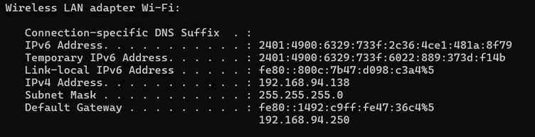

Network Port Scanning Guide
Tools Used: Nmap, Wireshark
Installing Nmap
- Go to nmap.org/download.html
- Click on Windows
- Click on the Latest stable release self-installer
- Once the download is complete, locate the nmap-version-setup.exe file and double click on it to run
- Click Yes to the prompt to allow the app to make changes to your device
- Click Agree after reading the License Agreement
- Choose the default components and click Next
- Choose the installation path and click Install
- Accept the default settings
- Click Install and Finish once Npcap is done
Finding the IP Range
- Open the command prompt on the system and type in the below command
ipconfig
- From the available information, look for the “Wireless LAN adapter Wi-Fi:”

- Here, from the IP address, subnet mask and default gateway, the IP range is found
- The IP range is
192.168.94.0/24
Perform TCP SYN Scan using Nmap
- Type the command nmap -sS 192.168.94.0/24 and click enter
- The list of hosts and the open ports are displayed below
- The two hosts are 192.168.94.138 and 192.168.94.250
- The host 192.168.94.250 is a DNS server and it has only port 53 open which is used for DNS services
- The host 192.168.94.138 is the IP address assigned for the system to access internet and the open 4 tcp ports are 135, 139, 445, 3386. There are 16 filtered ports too
Open, Filtered and Closed Ports
1. Open Port
Simple Meaning: There's an application or service actively listening and ready to communicate on that port.
Analogy: This is like a door that's wide open and someone (a receptionist, a shop owner) is standing there, ready to greet you and do business.
Technical Detail: When a port scanner sends a probe (like a knock on the door), the target system responds in a way that clearly indicates a service is running and accepting connections.
Security Implication: This is the primary goal for both legitimate users (who want to use the service) and attackers (who want to find vulnerable services). Each open port is a potential entry point.
2. Closed Port
Simple Meaning: No application or service is currently listening on that port, but the port itself is accessible.
Analogy: This is like a locked door that you can still reach and knock on. The building's security system (operating system) responds by saying, "Nobody's home on this door."
Technical Detail: When a port scanner sends a probe, the target system explicitly responds with a "port unreachable" or "reset" message, indicating no service is listening.
Security Implication: While not an immediate vulnerability, a closed port still tells an attacker that there's a live computer at that address. It also means the port could become open later if a service starts.
3. Filtered Port
Simple Meaning: A firewall, router, or other security device is blocking or "filtering" the connection attempts to this port. The scanner can't tell if a service is listening or not.
Analogy: This is like a door behind a bodyguard or a thick, soundproof wall. When you knock, you get no response at all, or perhaps a vague message that the bodyguard is "not accepting visitors." You don't know if there's someone inside or not.
Technical Detail: When a port scanner sends a probe, it receives no response back, or sometimes an ICMP "administratively prohibited" error. The firewall is simply dropping the packets.
Security Implication: This is generally good from a security standpoint because it provides the least information to an attacker. It hides the true state of the port, making it harder for an attacker to determine if a service is running behind the filter. However, it also means Nmap (or other scanners) can't definitively say if the port is open or closed, only that it's protected by a filter.
Packet Capture with Wireshark
- In the below captured Wireshark packets, the highlighted blue packet has the destination address of the DNS server as found by the Nmap Scan
- Here, the source address is the device’s IP address, it sends query to the DNS server to fetch the right IP address for the given domain linkedin.com
- The DNS uses port 53, which is also available in the Wireshark capture
- With the help of Wireshark, each packet can be analyzed for detailed inspection
Common Services Running on Ports
1. Port 53
As already mentioned above in the Wireshark capture, the port 53 is used for running DNS services. DNS is a critical service that translates human-readable domain names (like google.com) into machine-readable IP addresses (like 172.217.160.142) that computers use to locate each other on the internet. Without DNS, you wouldn't be able to browse websites, send emails, or use most internet services by their domain names.
Risks:
- DNS Amplification/Reflection Attacks (DDoS): Attackers send small DNS queries to an open DNS resolver while spoofing the source IP address to be that of their target.
- DNS Cache Poisoning / DNS Spoofing: Attackers inject forged or malicious data into a DNS server's cache.
- DNS Hijacking: Attackers gain unauthorized control over a DNS server or a domain's DNS records.
- Data Exfiltration (DNS Tunneling): Attackers can use DNS queries and responses to tunnel data out of a compromised network.
- Information Gathering / Reconnaissance: An open DNS server can be queried to gather information about a network's internal structure.
- Brute-Force Attacks: Attackers could try to brute-force credentials or exploit other weaknesses.
Security Measures:
- Restrict Access (Firewalling): Do not expose your DNS server to the public internet unless it's explicitly designed to be a public-facing authoritative DNS server.
- Implement DNSSEC: DNS Security Extensions add cryptographic signatures to DNS data.
- Rate Limiting: Configure your DNS server to rate-limit responses and queries from a single source.
- Keep Software Updated: Regularly patch and update your DNS server software.
- Monitor DNS Traffic: Implement logging and monitoring of DNS queries and responses.
- Separate Recursive and Authoritative DNS: Run your public-facing authoritative DNS servers separately from your internal recursive DNS resolvers.
2. Port 135
This port is used by Windows Remote Procedure Call (RPC) Endpoint Mapper service. It is crucial for many core Windows services and applications.
Risks:
- Remote Code Execution (RCE): Attackers could potentially run arbitrary code on a vulnerable system.
- Sensitive Data Exposure: Gaining access to information about services running on the system.
- Denial-of-Service (DoS) Attacks: Overwhelming the port with requests to disrupt service.
Security Measures:
- Firewalling: Port 135 should generally not be exposed to the public internet.
- Disable if Not Needed: Consider blocking or disabling port 135 if not required.
- Regular Patching: Keep your Windows systems and applications up to date.
3. Port 139
This port is associated with NetBIOS Session Service.
Risks:
- Ransomware: Many ransomware strains exploited vulnerabilities in SMBv1 exposed on ports 139 and 445.
- Unauthorized Access: Attackers could exploit misconfigurations or vulnerabilities.
- Information Gathering: It can be used to enumerate network resources and users.
Security Measures:
- Block Port 139 (and 445) from the Internet: These ports should never be directly exposed to the public internet.
- Disable SMBv1: Highly recommended to disable SMBv1 due to its known security flaws.
- Firewalling: Implement strict firewall rules to restrict access to ports 139 and 445.
- Patching: Keep all Windows systems and network devices patched and updated.
- Strong Access Controls: Ensure proper authentication and authorization for shared resources.
4. Port 3386
TCP port 3386 is officially registered for GPRS Data, specifically related to GTP' (GPRS Tunnelling Protocol Prime).
Risks:
- Billing Fraud and Revenue Loss: Attackers could intercept or manipulate charging data records.
- Denial of Service (DoS) to Billing System: Flooding the port could disrupt the charging data transfer.
- Information Disclosure: Subscriber data leakage might occur if vulnerabilities exist.
- Network Compromise: Exploitation of vulnerabilities could lead to remote code execution.
- Disruption of Mobile Services: Compromise of core network billing systems can impact service delivery.
Security Measures:
- Strict Network Segmentation and Firewalling: Systems running GTP' services should be isolated.
- Regular Patching and Updates: Keep the operating system and GTP' implementation fully patched.
- Strong Authentication and Authorization: Enforce strong, multi-factor authentication.
- Intrusion Detection/Prevention Systems (IDS/IPS): Deploy solutions capable of inspecting GTP' traffic.
- Logging and Monitoring: Enable comprehensive logging on the system hosting the service.
- Secure Configuration: Harden the operating system and the GTP' application.
- Regular Security Audits and Penetration Testing: Conduct periodic assessments against systems hosting port 3386.
Potential Security Risks from Open Ports
When you have open ports on your computer or network, it's like leaving unlocked doors or windows in your house. Here are the main security risks:
Key Security Risks from Open Ports
- Easy Entry for Attackers (Exploitation): Open ports allow services to listen for incoming connections.
- Data Theft and System Takeover: Attackers can try to guess passwords or use stolen login details.
- Your System Becomes a Weapon (DDoS Attacks): Attackers can use your open ports to launch attacks against others.
- Information Leakage (Reconnaissance): An open port can reveal details about your system.
Key Security Measures
- Close Unnecessary Ports: If a port isn't needed, close it immediately.
- Use Firewalls: Configure your firewall to allow only legitimate traffic.
- Keep Everything Updated: Regularly update your software and operating system.
- Strong Passwords & MFA: Use strong, unique passwords and enable Multi-Factor Authentication.
By managing your open ports carefully, you significantly reduce your vulnerability to cyberattacks.